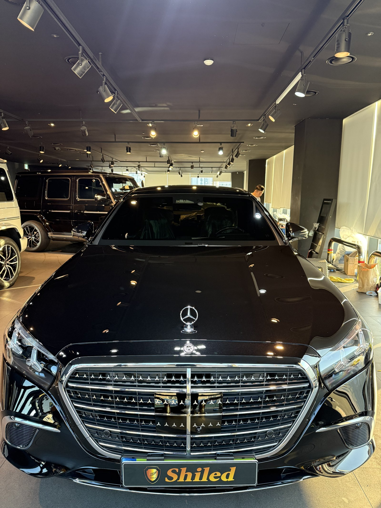
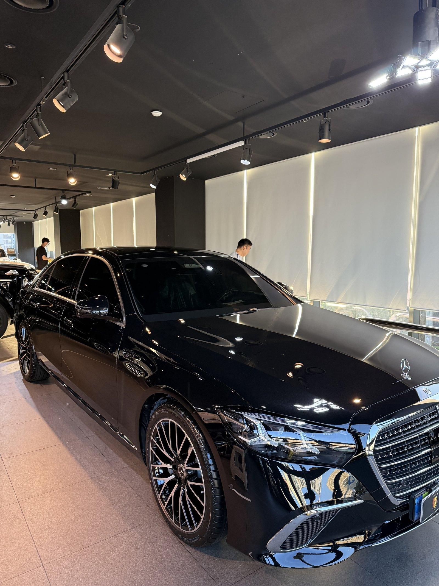
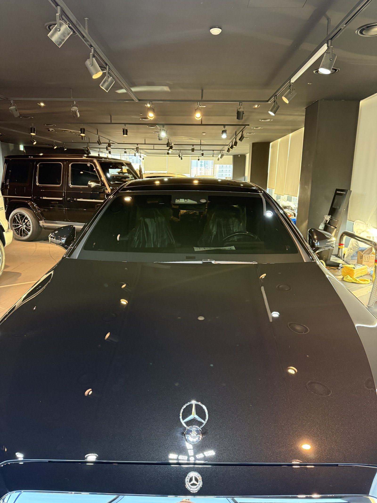
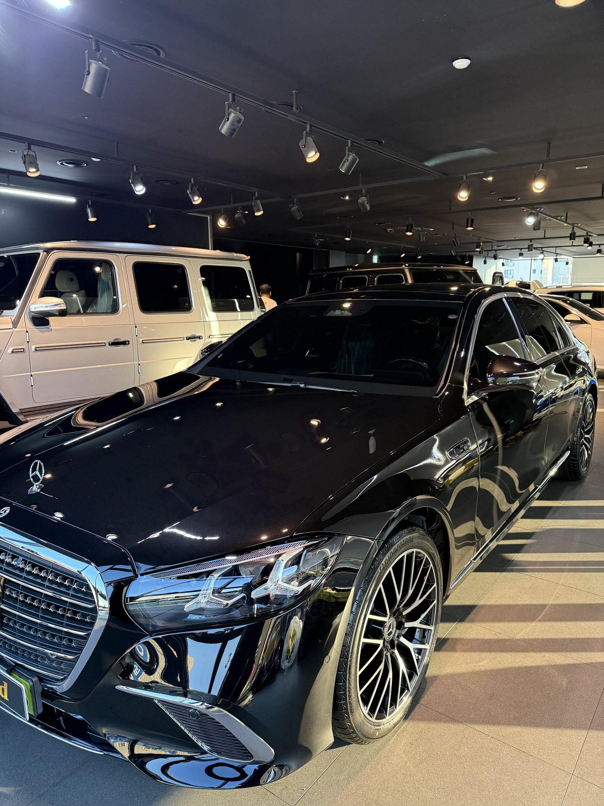
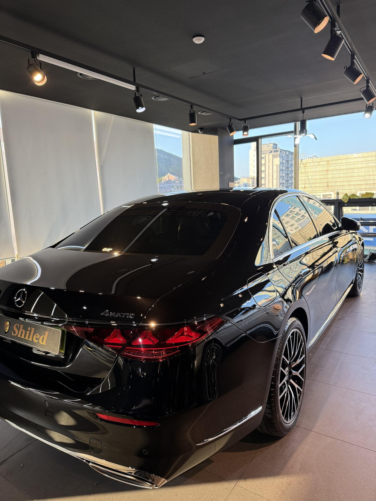
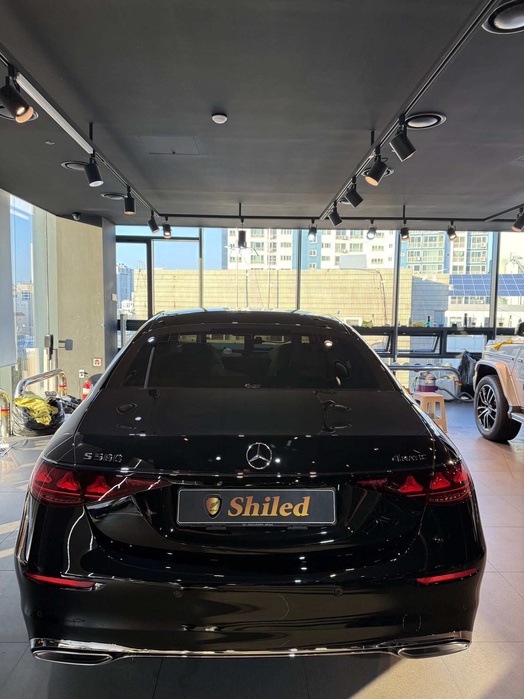
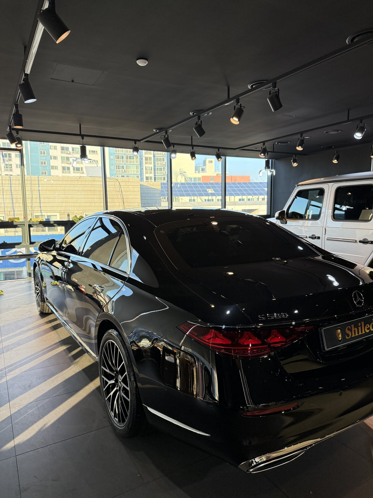
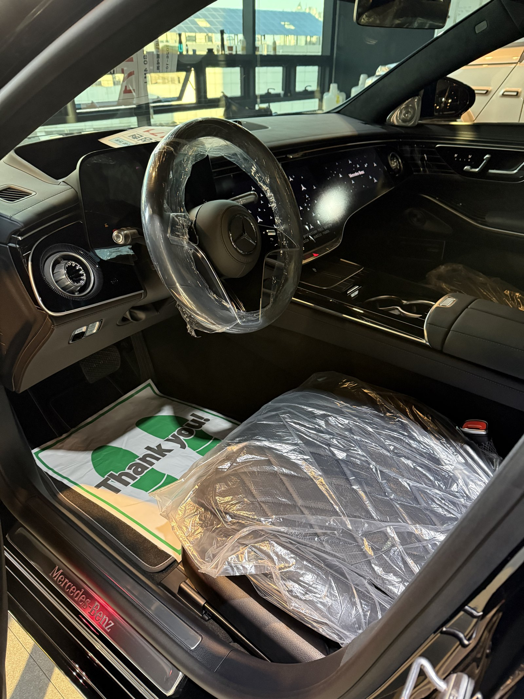
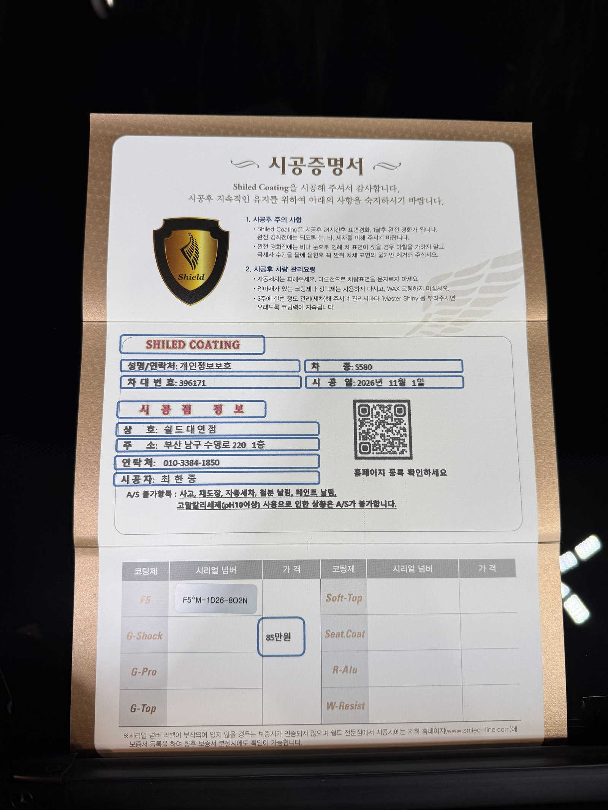

벤츠 S580, 검정 신차입니다.
보닛에 스탠딩 스타가 올라간 사양입니다.
출고 전 F5로 진행한 부산 유리막코팅 기록입니다.

검정 신차는 왜 조명 반사부터 보나요?
검정은 빛을 그대로 되돌려 주기 때문입니다.
천장 조명이 보닛에 점으로 또렷이 맺히면 표면이 평평하다는 뜻입니다.
반대로 그 점의 테두리가 번지면 그 자리에 뭔가 올라앉아 있는 겁니다.
밝은 색이라면 묻혀서 안 보일 상처가, 검정에서는 그대로 드러납니다.
그래서 검정 차는 코팅을 올리기 전에 이 반사부터 확인합니다.


S클래스는 뭐가 다른가요?
S580은 보닛부터 트렁크까지 한 면이 길게 이어집니다.
면이 길면 한쪽 끝을 닦는 사이 반대쪽이 먼저 굳습니다.
그래서 보닛과 측면을 더 잘게 끊어가며 발랐습니다.
보닛 스탠딩 스타 둘레는 패드가 들어갈 각이 나오지 않습니다.
그 자리는 손으로 돌려 바르고, 틈에 고인 코팅제는 굳기 전에 걷어냈습니다.




기술자의 팁
스탠딩 스타는 세차할 때도 둘레에 물이 고입니다. 그 자리만 물때가 남는 경우가 많으니, 마지막에 타월 모서리로 한 번 훑어 주십시오.
검정 S580에 F5를 올린 이유
F5는 색감의 깊이와 글로시함에 특화된 코팅입니다.
검정은 색이 얼마나 깊어 보이는지가 전부입니다.
표면이 매끈해질수록 빛이 흩어지지 않고 안쪽으로 떨어집니다.
그 차이가 가장 크게 보이는 색이 검정입니다.
코팅제는 대표가 직접 개발·제조한 제품입니다.
이번 부산 유리막코팅은 F5 싱글로 진행했습니다.

시공증명서도 함께 드립니다
모든 시공 차량에 시공증명서를 드립니다.
차종·시공일·코팅제 시리얼 번호가 적혀 있고, 홈페이지에 등록해 보증을 받으실 수 있습니다.

차종·시공일·코팅제 시리얼이 기재된 시공증명서
자주 묻는 질문
Q. 검정 신차는 왜 조명 반사를 먼저 보나요?
A. 검정은 빛을 그대로 되돌려 주기 때문에 조명이 점으로 또렷이 맺히는지, 테두리가 번지는지로 표면 상태가 바로 드러납니다. 밝은 색은 같은 상처가 묻혀 보입니다.
Q. 보닛 스탠딩 스타 주변은 어떻게 작업하나요?
A. 엠블럼이 서 있는 자리는 패드가 닿는 각이 나오지 않습니다. 둘레는 손으로 돌려 바르고, 틈에 고인 코팅제는 굳기 전에 닦아냅니다.
Q. 검정 S클래스에 F5를 올린 이유는 무엇인가요?
A. F5는 색감의 깊이와 글로시함에 특화된 코팅입니다. 검정은 색이 얼마나 깊어 보이는지가 전부라 F5가 가장 잘 맞습니다.
Q. 왜 출고 전에 코팅하나요?
A. 도장면이 가장 깨끗할 때 올린 코팅이 가장 오래갑니다. 운행과 세차로 잔기스가 생기기 전에 입혀두는 것이 핵심입니다.
Q. 쉴드광택 위치와 예약은 어떻게 하나요?
A. 부산 남구 유엔로220 1F 쉴드광택입니다. 예약·상담은 010-3384-1850, 대표 최한중이 직접 상담하고 책임 시공합니다.
새 차일수록 시작점이 다릅니다. 가장 깨끗할 때 입혀두십시오.
제품을 직접 만드는 사람이 직접 시공합니다.
부산에서 신차 유리막코팅을 고민 중이시면 편하게 연락 주십시오.
어떤 차를 타냐보다 어떻게 타냐가 중요합니다~!
시공 중에는 전화를 받지 못할 때가 많습니다.
카카오톡으로 차종과 원하시는 시공을 남겨주시면 확인 후 답변드립니다.
쉴드광택 · 부산 남구 유엔로220 1F · 대표 최한중